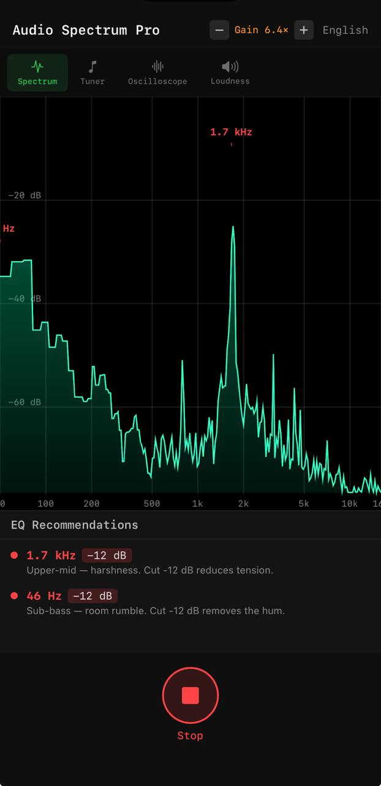
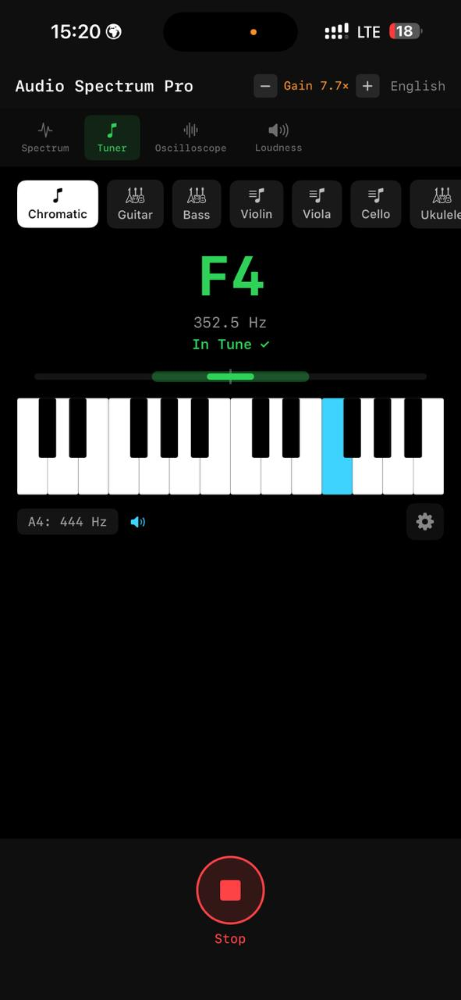
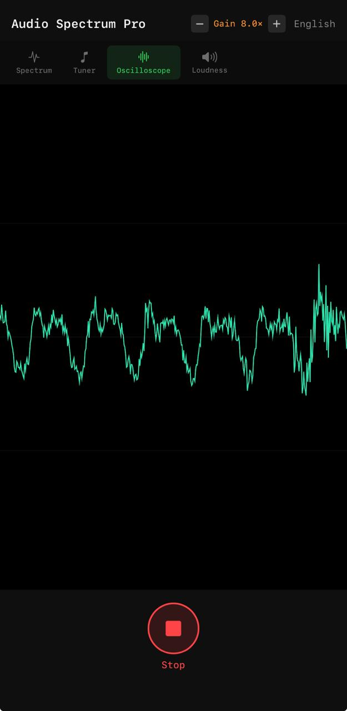
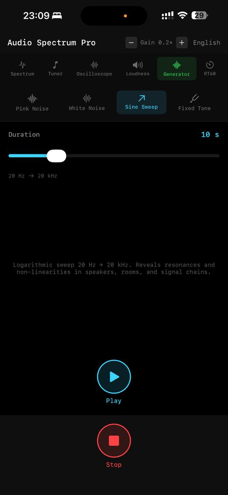
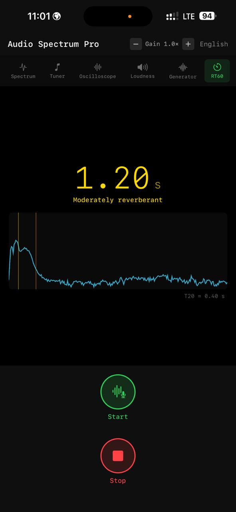

A full measurement suite for live sound engineers — spectrum analyzer, chromatic tuner, oscilloscope, loudness meter, test-signal generator and RT60 reverberation analysis. One black screen, built for the stage.

Six instruments a live engineer actually reaches for — each tuned for the stage, the monitor world, and the room.
Real-time spectrum from 50 Hz to 16 kHz on a logarithmic scale. Automatic peak detection highlights trouble instantly, and the EQ Suggestions panel tells you which band to cut — and by how many dB — before feedback ever happens.
High-precision detection with a clean in-tune indicator. Presets for guitar, bass, violin, viola, cello, ukulele, mandolin, banjo and a full chromatic mode — plus adjustable A4 reference, capo support and a noise gate that rejects bleed from the PA.

A real-time waveform display for signal-integrity checks, phase inspection and clipping detection. The first thing you reach for when a channel sounds off — see the shape of the signal, not just its level.

Simultaneous RMS and true-peak readout with a scrolling history graph. Watch your average level and catch peak spikes before they slam your limiters — 120 frames of history keep the trend in view.
Pink noise, white noise, a logarithmic sine sweep (20 Hz → 20 kHz) or a fixed tone from 50 Hz to 8 kHz. Play out loud while the analyzer keeps measuring — tune PA systems, ring out monitor wedges and find room resonances without a separate generator.

Tap start, make an impulse — a clap, a click, or a sine sweep — and the app records the decay, computes T20 and extrapolates RT60. Know instantly whether the room is working for you or against you.

Adjust mic gain with the hardware volume buttons — one hand, while the other stays on the console.
Fully black UI that reads under stage lighting and never kills your night vision.
Lay it flat on the meter bridge or a side table — full landscape support.
English, Russian and Ukrainian interface, switchable on the fly.
No subscriptions, no accounts, no audio leaving your device. Just the instruments — ready when the room is.